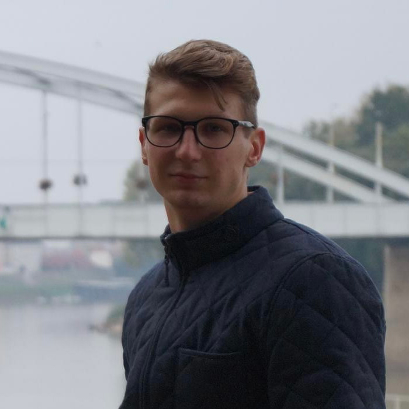

-
Dékány Gergely
- Hobbim: Crossfit (újrakezdő), PC játékok
- Miért jelentkeztem a frontendre? Szeretnék egy új területen fejlődni, tanulni.
- Legnagyobb cél: Szerető család akiknek minden tőlem telhetőt megadhatok.
- Ami tetszik a programozásban: Látom a folyamatos változást a felületen és jó érzés amikor végre sikerül megoldani egy problémát.
- Legjobb tulajdonság: Jó csapatirányító vagyok.
Gergő vagyok szegedi lakos. Amióta kikerültem az iskolapadból a kávézás teszi ki a mindennapjamat. Részletezve: 2013. Július óta vagyok vendéglátásban. 2014-ben kerültem be az Antique Café-ba amit 2016. szeptember 12. óta saját vállalkzásként csinálok. Az eltelt időbe próbáltam minél több dolgot megtanulni a kávéról és kávékészítésről minél magasabb szinten, viszont most már szeretnék valami másban fejlődni más irányba elindulni így kötöttem ki itt.